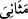
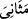
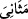
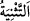
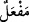
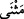
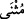
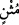

Yâni Kur’an âyetleri çok okunmasına rağmen insana usanç gelmez.
el-Müfredât’ta şöyle der: “Kur’an sûrelerine “__WORD__ denmiştir. Çünkü onlar ne kadar
zaman geçerse geçsin tekrarlanır. Sona erip bâtıl olan diğer şeylerden alınan dersler
zamanla sona erdiği halde ondan alınan dersler tükenmez, aksine hep defter ve kağıtlar
tükenir.” Nitekim çok okuduğu için Hz. Osman (r.a.)’ın elinde iki mushafın
parçalandığı rivâyet edilir.
Kur’an’ın kendisine de “__WORD__ (tekrarlanan)” denir. Çünkü Kur’an’ın özellikleri
arasında ‘Hayret verici halleri tükenmez’ denildiği gibi onun faydaları sürekli yenilenir.
“__WORD__ kelimesinin, övgü anlamındaki “__WORD__ kökünden olması da doğru olur. Böylece
gerek kendisinin gerekse onu okuyanların, öğrenip öğretenlerin ve onunla amel
edenlerin övülmesini gerektirecek bir kitab olduğuna dâir özelliklerin ebediyyen zuhûr
edeceğine dikkat çekilmiş olur. Kur’an’ın, “O hiç şüphesiz değerli bir Kur’an’dır”
(el-Vâkıa, 56/77) ‘kerîm/değerli’ diye tavsif edilmesi; “Hayır aksine o şerefli bir
Kur’an’dır.” (el-Bürûc, 85/21) âyetinde ‘mecîd/şerefli’ diye tavsif edilmesi de bu
anlamla alâkalıdır.
Ya da “__WORD__ kelimesi, “Sonra gözünü iki kez çevir” (el-Mülk, 67/4) yâni bir kez
baktıktan sonra bir kez daha bak, âyetinde olduğu gibi tekrar etmek ve yeniden yapmak
mânâsına “__WORD__den “__WORD__ vezninde “__WORD__nın çoğuludur.
Ya da “__WORD__nın çoğuludur. Bu durumda, belâğat ve i’câzı yönünden övülen (kitab)
anlamınadır. Hattâ bazı kimseler bazı âyetler hakkında “Fesâhatinden dolayı secde
ettim.” demişlerdir.
“__WORD__ (senâ eden/öven)” lafzının çoğulu olması da mümkündür. Buna göre, Allah’ı lâyık
olduğu en büyük sıfatlarıyla öven (kitab), demek olur.
İbn Bahr der ki: “Kur’an, beşerin nazm ve nesrinden farklı bir kelâm olduğu için
insanların kendi sözlerini gerek bir bütün olarak gerekse cüzleri îtibarıyla
adlandırdıklarından farklı isimlerle adlandırıldı. İnsanların eserlerine “dîvan” denirken,
Kur’ân’ın tamamı “Kur’an” diye isimlendirildi. İnsanlar “kasîde, hutbe ve risale”
derken, Allah “sûre” buyurdu. Onlar “beyt” derken, Allah “âyet” buyurdu. İnsanlar
beyitlerin sonlarına, birbirine uyması bakımından kavâfî/kâfiyeler derken, Allah
Kur’an’daki âyetlerin sonlarının birbirine uyması îtibarıyla Kur’ân’a “mesânî” adını
verdi.”
et-Te’vîlâtü’n-Necmiyye’de der ki: “Kur’ân’ın lafızda birbirine benzer, mânâda
tekrarlanan bir kitap olması iki yöndendir:
Birincisi, Kur’an’ın her lafzının farklı mânâları vardır. Bunlardan bazısı Arap dili ile,
bazısı şerîat ahkamı ile, bazısı da Hak Teâlâ’nın işâretleri ile alâkalıdır. Meselâ “salât”
lafzının lügatteki mânâsı duâ etmektir. Şerîat ahkâmında, kendine mahsus birtakım
görünüşlerden, rükünlerden, şartlardan ve hareketlerden ibârettir. Hak Teâlâ’nın
işâretinde ise tıpkı rûhunun özel bir üfürüş ile ilâhî huzurdan kalıba gelmesi gibi namaz
da Allah’a dönmektir. Çünkü namazda kişi, göklerle ilgili olan kıyâma, sonra